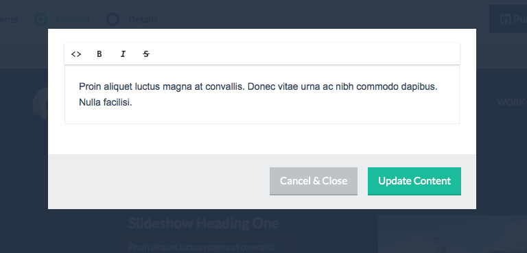
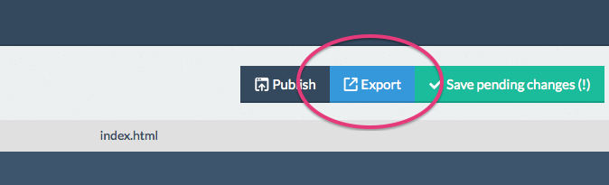
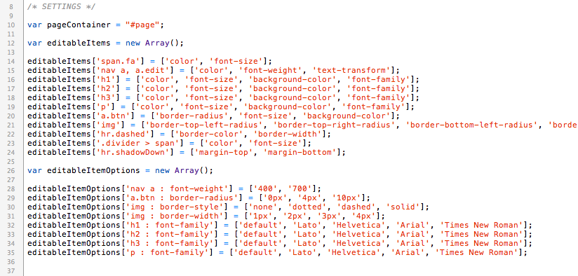

SITEBUILDER Lite Documentation
v.1.4.0
1.1 Block Approach
SITEBUILDER Lite takes a block oriented approach to building web pages and web sites. What this is means is that SITEBUILDER Lite provides the user with a selection of pre-designed blocks, such as headers, content sections, forms, footers, etc. which are combined onto a canvas to create fully functional web page.
To have a look at blocks bundled with SITEBUILDER Lite , please have a look here: http://trybuilder.com/lite/#blocks.
1.2 Drag & Drop
SITEBUILDER Lite uses an easy to use and intuitive drag and drop interface. Use the left sidebar to select your blocks and drag them onto the canvas. Once dropped onto the canvas, blocks can easily be re-ordered using the same drag and drop functionality.
1.3 Editing Text
SITEBUILDER Lite allows users to edit all written content within certain elements (as defined by the script's administrator). To edit written content, simply switch to "Content Mode" and hover over the element you'd like to edit. If the element's text is editable, a red dashed outline will appear around the element. After clicking the element, a modal popup window will appear in which you can edit the content.
1.4 Editing images and using your image library
SITEBUILDER Lite allows users to edit images within blocks as well (please note that the application administrator can define which images are allowed to be edited, so it could be that not all images are ediatble).
SITEBUILDER Lite makes a distinction between "user images" and "other images". User images are uploaded by users themselves and are stored in their image libraries. Other images have been uploaded the application administrator and can not be managed/removed by regular application users. When accessing your image library from the top menu, you will see two tabs, one for your own images and one for the other images.

When editing images through the drag and drop builder, make sure you switch to "Detail Mode" first as shown in the image below:
You can now choose the image you want to edit by clicking on it. Once clicked, the edit sidebar will slide out from the left of the screen. In the sidebar, click the tab labeled "Image" which will bring up the Image editing tab.

You can now click the button labeled "Use Image Library" which will launch a modal popup displayed your entire image library. To inset an image, locate the desired image and click the "Insert Image" button. Your newly inserted image will now appear on the canvas.
1.5 Editing Links
SITEBUILDER Lite allows users to edit links by either providing a URL or by choosing another page to link to. Starting by switching to "Detail Mode" as shown below:
Next, click the link you want to edit. Once clicked, the left sidebar will appear. Within the left sidebar, click the second tab labeled "Link".
Now you can either enter a URL or choose the page you want this link to connect with.
1.6 Editing Styles
SITEBUILDER Lite allows users to edit certain styling properties for elements defined by the application's administrator. Please note that the administrator defines which properties for which elements are editable, so do not expect to able to change every property for every element (to learn more about editable elements, please have a look at the Custom Elements section).
To edit styles for an element, again we'll need to switch to "Details Mode" as shown below:
Next, you can click the element which you'd like to edit. If an item has editable properties, a red dashed outline will appear around an element when moving over it with the mouse cursor.
Once the red dashed outline appears, you can click the element and the left sidebar will appear. Within this sidebar you'll automatically see all the available properties for the selected item. After making any changes, you'll need to click the green button labeled "Apply Changes" to see the changes take effect.
If you don't like the changes after seeing them in the canvas, you can click the orange button labeled "Reset" to restore the styling of the elements to it's original settings.
1.7 Editing Videos
SITEBUILDER Lite allows users to edit Youtube and Vimeo videos as well. To edit a video, switch to "Details Mode" and click the video you'd want to edit. This will open the left sidebar panel where you can enter a Youtube video ID or a Vimeo video ID. You can alter between these as you please, the application will detect which platform you're using and update the video accordingly.
1.8 Editing Tables
HTML tables can edited when in "Content Mode".
Once in "Content Mode", locate the table you want to edit, if the table is editable, a red dashed line will appear around it when hover the mouse cursor over it. After clicking it, a text editor will appear in a modal popup allowing to edit the table and it's content.
The third button from the right side of the editor's toolbar will reveal the table option dropdown. In this dropdown menu, you'll find all the options needed to edit the table's layout, such as adding, remove columns, rows, heads, etc.
1.9 Cloning Elements
SITEBUILDER Lite allows users to clone elements on the canvas. This comes in handy when working on a navigation for example, when you need an additional entry, you can clone the last item of the navigation.
To clone items, you'll need to switch to "Details Mode" first. Next, you can click the element you want to clone (if it's clonable, a red dashed outline will appear when moving the mouse cursor over the element). Once clicked, the left sidebar will appear. You can now clone the element by clicking the dark blue button labeled "Clone".
Please note that a cloned element will always get inserted right after the original element!
1.10 Editing HTML
SITEBUILDER Lite allows users to edit the source HTML of each block on the canvas. To access the HTML editor, first make sure you're in "Block Mode". Next, hover over the block you want to edit, and click the dark blue button labeled "source".
This will hide the block itself and bring up the HTML source editor. Click "cancel" to return without applying your changes to click "Save" to close and save your changes.
As of verion 1.4.0, the HTML editor comes with an HTML validator. When working on a blocks underlying HTML, the validator will automatically list validation issues below the editor (after a small time delay, which is configured in the /js/builder/config.js file).
1.11 Using templates
As of v1.3, SITEBUILDER Lite allows admin users to create page templates which are accessible for all users. If there are any templates created, they will appear in the left navigation under the heading "Templates". To use a template, simply drag and drop a template onto the canvas. Please note that using a template will remove all other blocks you currently have on your canvas.
Once dropped onto the canvas, all the blocks can be used as any other regular block
1.12 Page Settings
SITEBUILDER Lite allows users configure certain settings for each page within a given site. To bring up the page settings window, click the grey dropdown button labeled "Settings" towards the right edge of the screen:
Click the "Page Settings" link from the dropdown menu which will open the page settings window.
Within the page settings window, you can configure the page title, meta description, meta keywords and add additional code to be included in the HEAD section of the markup when either exporting or publishing your page or site.
1.13 Site Settings
Next to settings for individual pages, you can also configure certain settings for an entire site. To configure these settings, locate the grey button towards the right edge of your screen labeled "Settings" and click it to display a dropdown menu:
Click the "Site Settings" link to bring up the site settings window. Besides the Site Name, you'll find a panel containing FTP settings. These settings are required if you want to publish your site using FTP to a live webserver. The first item, labeled "Public URL" is not required to publish over FTP (this is only used to display the external link). All other fields are required to use FTP publishing.
Using the FTP browser
If you're not sure what remote path to use, you can use the built-in FTP browser. To use this, make sure you have entered the correct server, username, password and port number (if you're not sure about the port number, just leave it at 21). Next, click the blue button labeled "Browser Server". This will bring up a small panel showing you the files and folders located on your server.
You can use the FTP browser to locate the folder in which you want your site to be published. Once done, click the green button labeled "Save Settings" to save your details. You will get a final confirmation letting you know if all is ok. Once you see this confirmation, you can now publish your site!
1.14 Exporting Your Site
SITEBUILDER Lite allows users to export their sites at any given time. When you're ready to export your site, simply click the blue button labeled "Export".
Clicking the blue export button will bring up a modal window. Here, before you export your site, you can choose an alternative Document Type (by default it's set to HTML5 which is the recommended setting).
Click the "Export Now" button to download a ZIP archive of your entire site, including all CSS files, Javascript files and images.
1.15 Publishing Your Site
Instead of exporting your site, you can also choose to publish it to a live webserver using FTP. Please note that this function will only work if you have entered correct FTP settings. If you haven't entered FTP connection details yet or if you have entered incorrect FTP connection details, you'll see a notification like this:

Assuming you have provided correct FTP connection details, you can publish your site by clicking the dark grey button labeled "Export". If you have unsaved changes, you will be asked to save these changes first after which you can proceed to publishing your site.
The "Publish" button will bring up the publish window. Here, you can choose which assets and/or pages to publish. When you're publishing your site for the first time, you will want to choose ALL assets and ALL pages. After having published your site for the first time, you want to only publish those assets and pages which have been changed, as this will speed up the publication process significantly.
1.16 Revisions
Introduced with version 1.4.0
Each time a page is stored, a copy of the previous state of that page is maintained as well (this applies both to pages saved automatically as well as to pages saved manually). For each page, you can access the existing revisions through the "Older revisions" drop down. For each revision, three are three buttons available (right next the revision date):
- The first button allows you to the preview the revision by opening it into a new browser window.
- The second button allows you to restore the revision, by replacing the current page with that revision. Before the current page is replaced with the revision, an additoinal revision is created so you can always revert back.
- The third button allows you to remove a revision.
1.17 Custom CSS
Introduced with version 1.4.0
SITEBUILDER Lite allows you to provide custom CSS to modify a single page or an entire site.
To apply custom CSS for an individual page, use the "Page CSS" field under "Page Settings".
To apply custom CSS to the entire site, use the "Global CSS" field under "Site Settings".
When supplying custom CSS, please do not include the style tags, as these are added by the application automatically.
1.18 Admin Users
Users with Administration rights are allowed to add and remove users accounts. These users can access the User panel from the top menu.
Here you'll find all the current users of the application. You can also view the sites belonging to each user by clicking the "Sites" tab for a specific user. In addition you can create new user accounts and edit existing accounts.
User registrations
As of version 1.25, users can now sign up for an account on their own. By default, new user accounts will be disabled and need to be enabled by an admin user through the "Users" panel. Alternatively, new user accounts can be active by default. To achieve this, edit "/application/config/ion_auth.php" and set the config variable manual_activation to FALSE rather then TRUE. Once this is done, new accounts are active instantly and users can access the application right away after creating a new account.
1.19 Admin Settings
Users with Administration rights will have access to the Application Settings from the top menu. These settings control how the application behaves. More details about the Settings can be found in the Tech Manuel section.
1.20 Admin templates
As of version 1.3, SITEBUILDER Lite comes with templates. This feature allows administrators to pre-build pages which can be used by regular users. An admin user can build a page as he would with any other page, but instead of saving it as a regular site, he or she can choose to save the page as a template. Doing so, will make this template available for all regular users using the application. It's currently not possible to restrict access for certain users or to certain templates.
To use a template, the user simply drags and drops a template onto the canvas, as it was any other regular block. This will clear the canvas and drop all the blocks contained within the template on the canvas. After this, the user can then continue to work on the site as he or she would do normally.
An admin user can edit a template by dragging it onto the canvas, making the desired changes and the save as template. To delete a template, simply click the red DEL button on top of the template you'd like to remove.
2.1 Requirements
SITEBUILDER Lite has the following server requirmenets:
- A LAMP server (Linux/Unix + Apache + MySQL + PHP)
- Apache web server with mod_rewrite enabled
- PHP 5.1.6 or newer
- PHP MySQLi extension (regular MySQL might work but is not tested)
2.2 Installation
SITEBUILDER Lite comes with an easy installation script, saving you from the trouble of having to everything manually.
After downloading your copy from CodeCanyon, you'll need to start by unpacking the ZIP file on your computer. Next, upload the everything inside the SITEBUILDER to your webserver. Once done, open your browser and navigate to the /install/ folder (for example, if you have uploaded the application to http://mydomain.com, you would need to open http://mydomain.com/install/ in your browser). This will bring up the installation script shown below:
Here you'll need to fill in your MySQL database connection details and the email address and password you want to assign to the first admin account in your application (you will login with these details once the installation has been completed).
Things to check after installation
The first thing you should check are a couple of folder permissions. You'll need to make sure the following folders are writable by your webserver:
- /elements/images/uploads
- /tmp
The next thing you should verify is that there is a file named ".htaccess" located in your application's root folder. Since this file is hidden, you might need to force your file viewer to show hidden files.
Follow the instructions below when upgrading your script. Unless specified otherwise, copy all files and folders within mentioned folders.
v1.0 to v.1.0.1
Replace the following files and folders:
- /application/views/sites/create.php
v1.0.1 to v.1.1
Replace the following files and folders:
- /application (everything included in this folder except the "config" folder)
- /css
- /elements (make sure you keep a copy of elements you've added yourself)
- /js (be sure to keep a backup of your configuration arrays stored in this file /js/builder.js)
v1.1 to v.1.1.1
Replace the following files and folders:
- /js/builder.js (be sure to keep a backup of your configuration arrays stored in this this)
v1.1.1 to v.1.1.5
Replace the following files and folders:
- /application (everything included in this folder except the "config" folder)
- /css
- /elements (make sure you keep a copy of elements you've added yourself)
- /js (be sure to keep a backup of your configuration arrays stored in this file /js/builder.js)
v.1.1.5 to v1.1.6
Replace the following files and folders:
- /application/views/sites/create.php
- /css
- /elements (make sure you keep a copy of elements you've added yourself)
- /js (be sure to keep a backup of your configuration arrays stored in this file /js/builder.js)
v1.1.6 to v1.1.7
Replace the following files and folders:
- Add /js/src-min-noconflict/*
- Add /js/redactor/table.js
- Replace /js/builder.js
- Relpace /application/views/sites/create.php
- Replace /css/builder.css
- Replace /css/style.css
- Replace everything included in /elements/*
- Replace /elements.json
- Replace everything included in /application/controllers/*
- Replace everything included in /application/models/*
v1.1.7 to v 1.1.8
Replace the following files and folders:
- /application/controllers/* (replace all files in this folder)
v1.1.8 to v1.1.9
Replace the following files and folders:
- /application/controllers/sites.php
v1.1.9 to v1.2
Replace the following files and folders:
- All block files located in /elements
- /elements/css/style-portfolio.css (replace)
- /elements/css/style-team.css (replace)
- /elements/skeleton.html (replace)
- /elements/js/over.js (add)
- /application/views/sites/sites.php (replace)
- /application/views/sites/create.php (replace)
- /js/builder.js (replace)
- /application/language/english/builderlite_lang.php
v1.2 to v1.25
- /application/config/ion_auth.php (replace)
- /applications/language/english/ (replace all files in this folder)
- /application/controllers/ (replace all files in this folder)
- /application/views/ (replace all files in this folder)
- /application/models/ (replace all files in this folder)
- /application/libraries/ (replace all files in this folder)
- /css (replace all files in this folder)
- /js/builder.js (be sure to keep a backup of your configuration arrays stored in this file)
- /system/helpers/captcha_helper.php (replace)
v.125 to v1.3
-
Execute the following MySQL statements to update your database:
-ALTER TABLE `pages` ADD `pages_preview` TEXT NOT NULL AFTER `pages_header_includes`;
-ALTER TABLE `pages` ADD `pages_template` INT(1) NOT NULL DEFAULT '0';
-ALTER TABLE `frames` ADD `frames_sandbox` INT(1) NOT NULL DEFAULT '0' AFTER frames_original_url;
-ALTER TABLE `frames` ADD `frames_loaderfunction` VARCHAR(255) NOT NULL AFTER frames_original_url; - /application/controllers/ (replace everything in folder)
- /application/language/english/builderlite_lang.php (update file)
- /application/libraries/simple_html_dom.php (add file)
- /application/models/ (replace everything in folder)
- /application/views/ (replace everything in folder)
- /css/ (replace everything in folder)
- /images/loading.gif (add file)
- /js/builder.js (replace file, make sure you copy your settings!)
- /js/redactor/ (replace everything in folder)
- /.htaccess (file has been updated)
v.1.* to 1.4.0
SITEBUILDER Lite v1.4.0 has seen a complete rewrite of the builder interface as well as major changed to the back-end code as well. Therefor, we suggest to do a complete re-install when switching to v1.4.0.
The syntax of the elements.json file has slightly changed. You're able to use your orignal elements.json file, but you'll need to make some small changes to it (you'll need to remove the variable declaration from the beginning of the file, please use the v1.4.0 elements.json as reference).
The Javascript configuration is now done through a separate file located at /js/sitebuilder/config.js. To keep using your origial settings, you can copy the orignal editableItems and editableItemOptions arrays.
All the CSS and Javascript used by the blocks is now minified and concatenated for faster load times. The CSS used by the application is concatenated and minified as well. When making changes to the application CSS, you'll need to run Grunt (Gruntfile.js is included in the root folder) to make sure the changes are reflected in the used CSS.
Migrations
To make sure your database is completely up to date, as off v1.4.0 we're inlcuding CI Migrations to easily update your database. To perform the migration, follow the folllowing steps:
- Edit /application/config/migration.php and set "migration_enabled" to TRUE.
- Point your browser to "http://yourdomain.com/index.php/mirgate" where you obviously replace "yourdomain.com" with the domain to your copy of the application. This will run the migration and automatically update your database.
- Edit /application/config/migration.php and set "migration_enabled" to FALSE.
2.3 Pretty URL's
By default, SITEBUILDER Lite will keep "index.php" as part of the application URLs. You can remove this, by editing the application settings through the Settings panel (please note that only users with Adminisrtation rights have access to the Settings panel).
On the Settings panel, locate the field labeled "index_page" and remove the "index.php" value (thus making the field empty).

In addition to changing the "index_page" setting, you will also need to modify the .htaccess file (located in the root folder of the application). You will find four lines commented out (having '#' at the beginning of each line).

Change to:
After completing the two steps above, your application will now use pretty URLs and no longer display "index.php" as part of the URL.
2.4 Settings Page
Users with administration permissions have access to the Settings panel through which a number of settings can be configured. Below we'll briefly describe the available settings. Please note that these descriptions are also available inside the Settings panel (when clicking on a setting field, a message will appear in the right column providing this information).
Please be careful when making changes on this page; if you don't fully understand a configuration item, please do not make any changes to it!
-
elements_dir
The directory where all your element HTML files are stored. This value is relative to the directory in which you installed the application. Do not add a trailing "/"
-
images_dir
This is the main directory for the images used by your elements. The images located in this directory belong to the administrator and can not be deleted by regular users. This directory needs to have full read and write permissions!
-
images_uploadDir
This directory is used to store images uploaded by regular users. Each user will have his/her own directory within this directory. This directory needs to have full read and write permissions!.
-
upload_allowed_types
The types of images users are allowed to upload, separated by "|".
-
upload_max_size
The maximum allowed filesize for images uploaded by users. This number is represents the number of kilobytes. Please note that this number of overruled by possible server settings.
-
upload_max_width
The maximum allowed width for images uploaded by users.
-
upload_max_height
The maximum allowed height for images uploaded by users.
-
images_allowedExtensions
These allowed extensions are used when displayed the image library to the user, only these file types will be visible.
-
export_pathToAssets
The collection of asset paths included in the export function. These paths are relative to the folder in which the application was installed and should have NO trailing "/". The paths are separated by "|".
-
export_fileName
The name of the ZIP archive file downloaded when exporting a site. We recommend using the ".zip" file extension (others might work, but have not been tested).
-
index_page
Set to "index.php" by default. If you'd like to use pretty URLs (without "index.php" in them) leave this setting empty. If you want to use pretty URLs, don't forget to update your ".htaccess" file as well (more information can be found in the provided documentation).
-
lnguage
"english" by default. If you're changing this to anything else, please be sure to have all required language files translated and located in the correct folder inside "/application/languages/yourlanguage".
2.5 Translation
SITEBUILDER Lite is translation ready. What this means is that all text used throughout the application is contained in language files. Language files are located in /application/language/ and the default language is "English" (language files located in /application/language/english/).
If you want to translate the application, you'll first need to create the required language files. You can do this by simply copying the English language files and place them in the proper directory. For example, if you're translating the application into Russian, you'll need to copy the language files to /application/language/russian/. Many language folders are already there, if yours is not there, you can just add it.
After creating the language files, you'll need to change the application's language through the Settings panel.

3.1 Custom Elements Introduction
SITEBUILDER Lite allows you to easily extend the application by adding your own custom block! All that is required is some basic (basic, really) knowledge about HTML and Javascript. You can decide to either modify the existing blocks, add your own blocks or use nothing but your own blocks; it's all possible! In this section we'll explain how the blocks fit into the application and how to you can add your own!
If you're feeling lost while reading this, please feel free to create a ticket through our support portal. Once created, one of our support staff will do his or her best to guide you and help you get on your feet.
3.2 Block Files
The blocks used by the application are all placed within their own HTML file. This means that header 1, header 2, content section 1, etc all have their own HTML file. By default, these files are all located in /elements.
Below you'll see the contents of a random block file (a contact form block bundled with the application). Please note that some of the deeper HTML has been collapsed to keep the file shorter and clearer.
In the HEAD section is used to include the required CSS files as well as some meta tags and other regular stuff you'll find in HTML document headers.
The first child HTML element found in the BODY is an important element. The is the container element for your blocks and should be included in EVERY block file. The default ID for this element is "page", which you can usually leave as is. However if you want to change the ID of this element, you'll need to change this inside /application/js/builder.js as well. After you've changed the setting builder.js, you can use this ID for the container element in all your block files.
Inside the main container element, you can place all the markup for this particular block. And towards the bottom, before the closing BODY tag, you can include the required Javascript files.
To keep everything nice and neat, we suggest keeping all your CSS files, Javascript files and images within child folders of the /elements/ folder.
Block files and SiteBuilder specific markup
"editContent" class
To enable elements and sections as "content editable" (meaning users can edit the written content within these sections), you would need to add the class name "editContent". This class name can either be added to content elements (such H1, H2, H3, P, SPAN, A, etc) directly OR to elements containing multiple content elements (for example, a DIV containing several H1, H2 and P tags).
Youtube and Vimeo videos
To be able to edit Youtube and Vimeo videos, you will need to apply some specific markup. For starters, you will need to wrap the IFRAME in a DIV with class name "videoWrapper". Second, the containing DIV will need to contain another empty DIV with class name "frameCover".
Table wrapper
To make a table editable, you will need to wrap the entire table in a DIV with class name "tableWrapper".
3.3 elements.json
Once you have your block files nice and ready, the next step involves editing the file /elements.json. This JSON file contains links to all your block files as well as some additional data. As the file extension suggests, the data format is JSON. If you're not familiar with JSON, please have a quick look at this website. Even without much understanding of the JSON format, editing the elements.json file is still pretty easy, just have a look at how the file is structured and you should be ok.
As you can see, the blocks in the file are organised by category. This same structure is used to organise your blocks in the left sidebar in the drag and drop builder. Furthermore, for each block the file contains the URL, the height and the thumbnail link. The thumbnail link is optional, if left out, a iframe thumbnail will be used (please keep in mind that when you leave the thumbnail link out for many blocks, the load speed of the application can get a lot slower).
3.4 skeleton.html
Once you have your block files ready and have successfully configured your /elements.json file, it's now time to configure the next piece of the puzzle: the skeleton file! The skeleton file is located at /elements/skeleton.html and serves as a skeleton or shell in/around which your pages will be build. When using the export or publishing functions, the pages you have build on the canvas are placed within the skeleton file before being zipped or published on your webserver.
Since the skeleton.html file is used to create all your pages, it has certain requirements:
In the HEAD section, you will need to include ALL the CSS files used by ANY of your blocks. Since any of your blocks can end up in the skeleton file, the CSS files need to be there as well.
Next, you will need to include the container element as the first child element of the BODY section. This element needs to be EMPTY (like in the screenshot above).
Finally, before the closing BODY tag, you'll need to include ALL of your Javascript files used by ANY of your blocks. Same story as with the CSS, any of your blocks can end up in this skeleton file, so all Javascript files need to referenced from this file.
3.5 Editable Items
It's up to the applications administrators to define which HTML elements are editable and for each for each of those elements, which CSS properties can be edited by the end-users.
This configuration takes place in the file /js/builder.js.
As you can see from the screenshot above, the configuration takes the form of a Javascript array named "editableItems". Each key in this array represents a jQuery selector and the value belonging to that key holds another array containing the editable properties for that jQuery selector.
The second array that's important here is called "editableItemOptions". In this array, you can specify options the user can choose from when editing that particular property. If none are specified, the user will see a regular text field in which they can enter any value.
Please note that any properties in the editableItems array containing the word "color" will automatically launch a color picker when the user tries to the change that property.
Editable text
With version 1.1, an improved way of editing written text was introduced. The new method is using a (rich) text editor rather then relying on "designMode". The new method requires editable sections to be defined in "/js/builder.js" using the "editableContent" array. This array should hold a selection of proper jQuery selectors, pointing to elements which text contents are editable. You can either enter individual elements, or grouped together. When using grouped elements, it's advised to wrap those elements in a containing DIV and place a jQuery selector for this DIV in the "editableContent" array.
3.6 Export Assets
The final step of setting up your own blocks is configuring the assets included in your site export. This setting is located within the Settings panel (accessible only by users with administration rights).
As you can see, this setting contains the paths to all assets to be included in the export, separated by "|"'s.
Sent API / dealing with forms
Introduced with version 1.4.0
SITEBUILDER Lite nows comes bundled with the handy Sent API (also separately available on CodeCanyon). You will find a copy of the Sent API after unzipping the package downloaded from CodeCanyon. Sent API comes with it's own documentation.